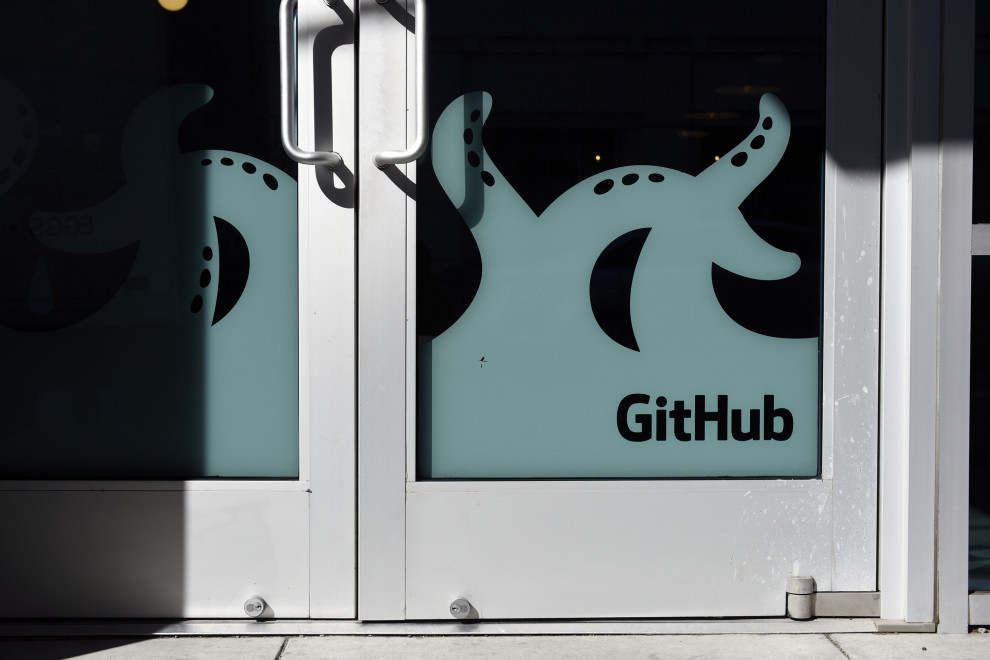

GitHub nabs JavaScript packaging vendor npm
GitHub, the developer repository owned by Microsoft, made a little deal of its own this morning when it bought JavaScript packaging vendor npm for an undisclosed amount. As GitHub CEO Nat Friedman wrote in a blog post announcing the deal, npm is a big deal in the JavaScript community. The company is the commercial entity behind the Node package manager, the npm Registry and npm CLI. “npm is a critical part of the JavaScript world. The work of the npm team over the last 10 years, and the contributions of hundreds of thousands of open source developers and maintainers, have made npm home to over 1.3 million packages with 75 billion downloads a month,” Friedman wrote. As though anticipating developer angst about the change in ownership, Friedman promised that users would not notice a difference. “For the millions of developers who use the public npm registry every day, npm will always be available and always be free,” Friedman wrote. He also promised to update the infrastructure behind the tool, improve the experience and keep up communication with the npm community. What’s more, he said the company would incorporate the npm tech into the GitHub platform. “Looking further ahead, we’ll integrate GitHub and npm to improve the security of the open source software supply chain, and enable you to trace a change from a GitHub pull request to the npm package version that fixed it,” he wrote. Isaac Schlueter, npm founder and CEO, writing in a company blog post, saw the acquisition as change for the better. “There are some awesome opportunities for improvement in the npm experience, to meaningfully improve life for JS devs in countless large and small ways. We’ll be making things more reliable, convenient, and connected for everyone across our vast interdependent JavaScript ecosystem,” he wrote. But it’s not just the free version, of course. There is a core group of paying customers too, and Friedman indicated GitHub would continue to support them. He also stated that later this year when the registry is integrated more fully into the GitHub platform, paying customers would be able to convert their private npm packages to GitHub packages. Founded in 2014, npm has raised almost $19 million on a $48 million post-valuation, according to PitchBook data. “For six years, in the grind of a startup, we’ve had dreams too big to dare hope for. This next chapter is a chance to realize those dreams,” Schlueter wrote.